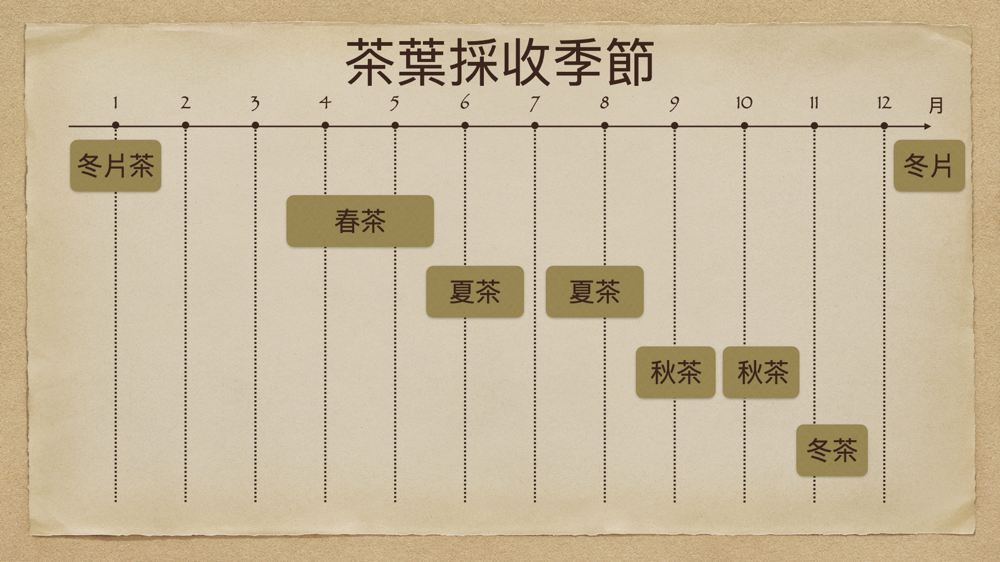

---採茶---

春茶
俗稱頭茶、春仔茶，三月中旬至五月中旬採製
春季溫度適中、雨量充沛，再加上茶樹經秋冬季之休養生息，使春茶的芽葉肥壯，維生素含量較高。
此外，由於春茶季節的氣溫較低，利於芳香物質的合成與積累，所以茶葉的香氣也較高。
夏茶
第一次夏茶（俗稱頭水夏仔、二水茶)：五月中旬至六月下旬採製
第二次夏茶（俗稱六月白、大小暑茶)：七月上旬至八月中旬採製
夏季氣溫較高，茶樹芽葉生長迅速，能溶解於茶湯的浸出物相對減少，使其香氣不如春茶濃郁。
但也因日照強烈，所含茶素及咖啡因較高，適合用來製造全發酵的紅茶，發酵過程會降低夏茶的苦澀味，製作出來的茶略帶甜香。
秋茶
第一次秋茶：八月下旬至九月中旬採製
第二次秋茶（俗稱白露茶)：九月下旬至十月下旬採製
秋茶的生長季節秋高氣爽，利於一些芳香物質的合成與積累，但因生長期比春茶短，鮮葉內有效成分的積累相對少，
所以品質介於春茶與夏茶之間，香氣和滋味較為平和中庸。
冬茶
俗稱尾水仔，十月下旬至十一月下旬採製
水色及香味較春茶淡薄，但若製成清香型之烏龍茶與包種茶，香氣細膩少苦澀為其特點。
乾葉外觀顏色略呈淺翠綠，粗茶的雜質較多，整體顏色較不均勻。沖泡時香氣較偏淡香型，滋味雖不如春茶濃郁，卻較為柔順。
♢